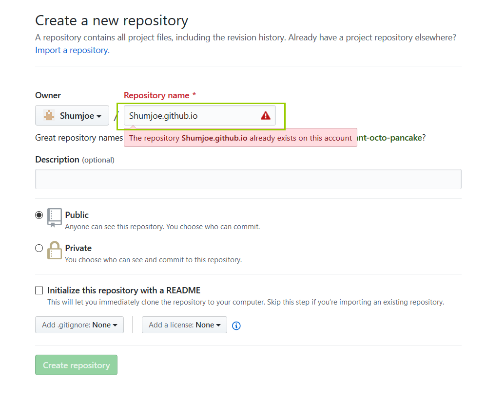
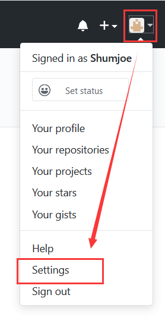
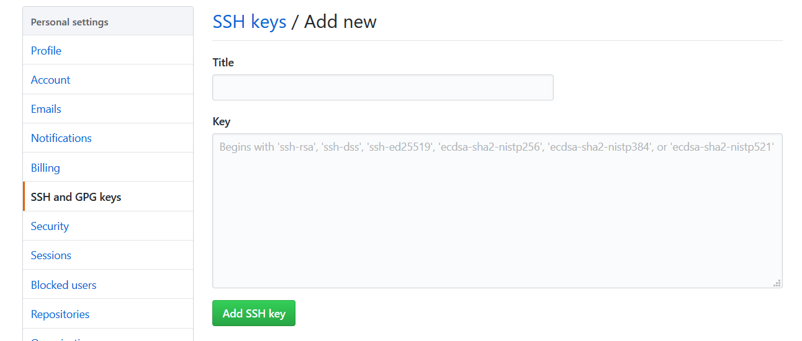
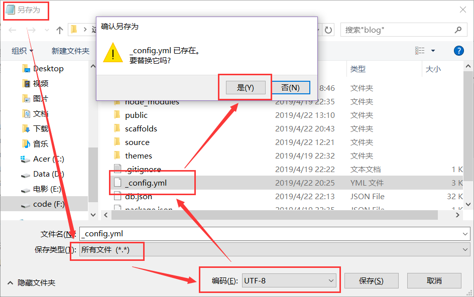
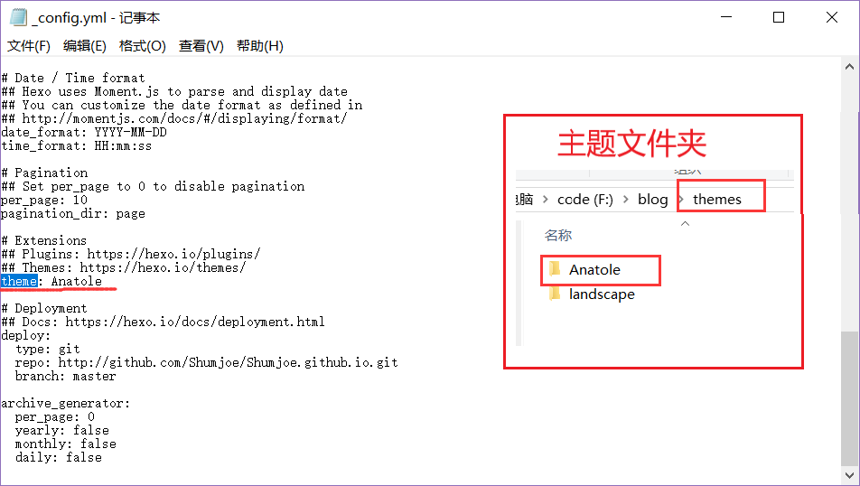

- 前言：博主通过github+hexo搭建了这个个人博客，所以首篇必定是怎样搭建一个像我这样的博客，也可参考hexo史上最全搭建教程,我就是参考这篇文章搭建了个人博客
目录
简介
Github
GitHub是一个面向开源及私有软件项目的托管平台，因为只支持git 作为唯一的版本库格式进行托管，故名GitHub。 来源：百度百科
hexo
Hexo 是一个快速、简洁且高效的博客框架。Hexo 使用 Markdown（或其他渲染引擎）解析文章，在几秒内，即可利用靓丽的主题生成静态网页。 来源：hexo官网
准备工作
由于Hexo官方文档详细写明了安装过程，在此就不再累述，请按照官方文档进行环境的搭建
在写搭建博客部分时，我发现官方文档中对于新手不太友好，有些说得比较含糊，所以准备重新写环境的搭建。这里只写Win系统，对于用其他系统的请参照官方文档。
Git安装
点击这里，选择和自己系统相对应的git进行下载安装，一般情况下，点击此链接浏览器会自动为你创建适应你系统版本的下载任务。
当你安装好Git后，就可以使用Git Bash(在文件夹或空白处右键，选择Git Bash)敲命令，下面的命令均在这里敲入。
装好以后，可以在命令行中输入以下代码查看是是否安装成功以及Git版本。
1
git --version
Node.js安装
点击这里下载Node.js，选择LTS版本即可。
同理，安装好以后，命令行中输入以下代码查看是否安装成功以及版本。
1
2node -v
npm -vhexo安装
当上述两个安装好时，在命令行中输入以下命令来安装hexo。
1
npm install -g hexo-cli #安装hexo
在命令行中输入以下命令检查hexo版本。
1
hexo -v
搭建博客
创建个人仓库
首先需要有一个GitHub账号，点击这里可进行注册。
新建一个仓库，在Repository name里面输入你的用户名+github.io，例如，我的用户名为Shumjoe，则我输入Shumjoe.github.io。

注：Description可填可不填，就是对仓库的描述。其余默认即可*
输入之后，点击Create repository。
添加SSH
在Git Bash里面输入以下命令，以确认身份
1
2git config --global user.name "yourname"
git config --global user.email "youremail"注：这里的yourname是你的Github用户名，youremail是注册Github的邮箱。
输入以下命令创建SSH
1
ssh-keygen -t rsa -C "youremail"
在桌面或文件夹任意空白处右键，依次选择Git GUI–>Help–>Show SSH key，就会显示SSH，复制该SSH。
打开你的GitHub，如下图所示，点击Settings。注意：点击用户的Settings而不是仓库的Settings

依次选择SSH and GPG keys–>New SHH key，把你刚才复制的SSH填进去，title随意(SSH只是用来验证现在所使用设备是否有权限操作Github上面的文件)，然后点击Add SSH key。

在命令行中输入以下命令检查是否设置成功
1
ssh -T git@github.com
hexo关联GitHub
创建本地博客
首先需要在本地创建你的博客文件夹。打开一个你想安置博客文件夹的位置，例如我放在了F盘，进入
F:\，打开Git Bash,输入下面的命令行，其中“blog”可以换成你想用的文件夹名字。1
2
3hexo init blog //创建文件夹并将其初始化为hexo博客文件
cd blog //进入该文件夹
npm install //或者一个空文件夹，并在该文件夹上打开Git Bash，输入以下命令
1
2hexo init //在当前文件夹初始化
npm install //输入以下命令，生成静态文件并启动本地服务器
1
2hexo generate //生成静态文件 可简写成hexo g
hexo server //打开本地服务器 可简写成hexo s默认情况下，访问网址为
http://localhost:4000/，可进入该网站查看你的博客。当然现在只能本地查看。建立关联
打开你创建的博客文件夹，里面有一个站点配置文件
_config.yml，用记事本打开这个文件，下拉到最后，若无deploy项可自行添加，修改为以下内容。其中YourName修改为你的GitHub名字。1
2
3
4deploy:
type: git
repo https://github.com/YourName.github.io.git
branch: master注意：
_config.yml文件中，冒号后面应该有一个半角空格，如果在提交的时候报错，请检查该文件冒号后面的空格时候缺失。如果仍旧报错，请将上述repo后面的网址协议改为http。输入以下命令，安装deploy-git，以部署本地文件到GitHub。
1
npm install hexo-deployer-git --save
部署文件
输入以下命令，将你对博客的修改提交至GitHub。
1
2hexo generate
hexo deploy //可简写成hexo d注：deploy时，有可能需要输入自己的username和password。
至此，你的个人博客就搭建好了，等一会儿，在
yourname.github.io，即上面让你创建的仓库名查看你的博客，其中yourname替换成你的用户名。
配置博客
修改信息
在建立关联中提到过一个站点配置文件
_config.yml，打开这个文件，修改最前面的一些信息，即可把你的博客显示用户信息修改。1
2
3
4
5
6
7
8# Site
title: //标题，也就是网页标签显示内容
subtitle: //副标题
description: //描述
keywords:
author: //作者
language: zh-cn //若博客为中文，可以输入zh-cn
timezone: //时区，默认为电脑所用时区注：前面曾提到过，
_config.yml文件中，冒号后面要加上半角空格若保存后出现中文乱码，请用记事本打开该文件，依次选择文件–>另存为，保存类型选择所有文件，编码选择UTF-8，双击
_config.yml,然后替换它。如下所示
更换主题
如果想修改主题，请进入官网主题选择一个你喜欢的主题，进入其GitHub页，将其下载下来，放到博客文件夹的
themes文件夹中，然后更改站点配置文件_config.yml中的theme项为刚才放入themes文件夹中的文件名字（Ctrl+F搜索theme快速定位），如下图所示：